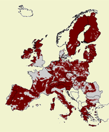
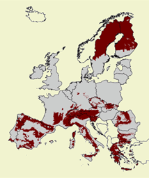
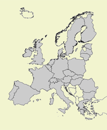

Less Favoured Areas - LFA
The important aims of the LFA policy are to ensure continued agricultural
land use and to contribute to viable rural communities. In Eururalis three LFA
policy options have been implemented:
|  1. A continuation of current LFA areas; 56% of Europe is under LFA |
 2. Reduced LFA's; with a focus on mountain and specific handicap areas only: approximately 25% of Europe is under LFA |
 3. No LFA; 0% of Europe is under LFA |
Background
The legal basis of the Less Favoured Area (LFA) policy is laid down by Council
Regulation (EC) No. 1257/1999. The aim of regulation is to ensure continued
agricultural land use and thereby contribute to the maintenance of a viable
rural community, to maintain the countryside and to maintain and promote sustainable
farming systems which in particular take account of environmental protection
requirements.
The current LFAs have been divided into three categories: mountain areas, lowland
areas (intermediate areas) and areas with the specific natural handicaps. Farmers
in LFAs are eligible for payments per hectare in addition to conventional CAP
support.
Due to European diversity the delineation of LFAs is based on various criteria
appropriate for each Member State. The criteria are different in each country
due to climate, land relief, soil productivity and the growing condition for
crops. The present LFA policy will be valid until the year 2009.
Nevertheless, to unify the criteria for LFAs, the European Commission has proposed
to revise the designation criteria for the most controversial one - the intermediate
LFAs - for the next programming period. This is subject to discussion at present
time.
The restructuring of this policy will influence rural income and land abandonment.
Therefore it is necessary to assess the impact of changes in LFA policy on land-use,
biodiversity and environment of farmland.
Eururalis 2.0 offers the possibility to evaluate three policy packages for the
LFAs. This can support the process of decision making of the future shape of
LFA Policy. Dependent on the scenario one can alter the LFA policy and explore
the outcomes on the indicators.
The three policy options on LFA